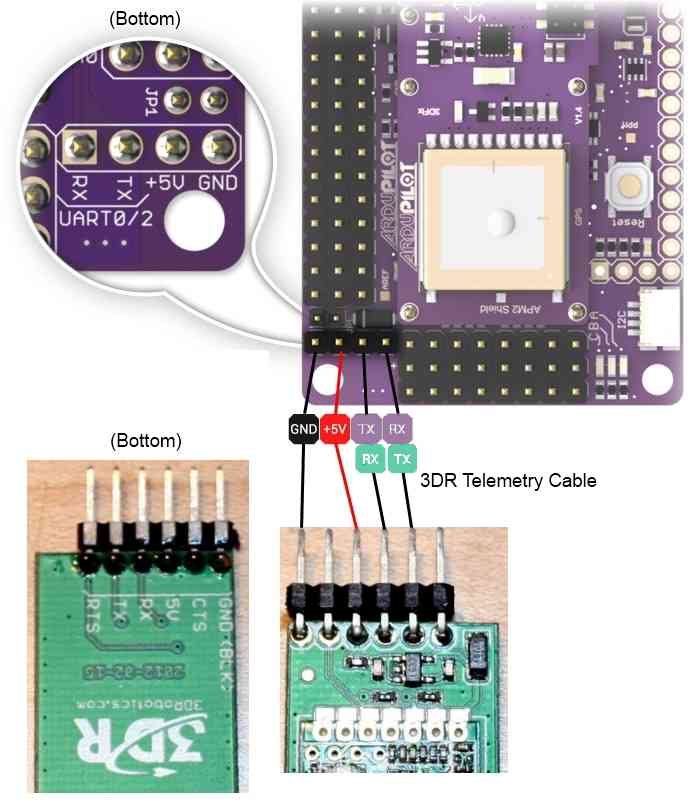

Archived:Using Xbee radios for telemetry with APM¶
{kind=link}
Hooking up your Xbee wireless modules¶
Adding wireless telemetry is not difficult and can extend the capabilities of your UAV immensely. We recommend 900Mhz Xbees. If you are in Europe, where 900Mhz is not allowed, you can use a 2.4Ghz Xbee kit instead.
Warning
On APM 2, you cannot use the Xbee while your APM board is connected to the USB port.
That’s because the Xbee and USB share the same serial port, with some clever multiplexing to detect if the USB cable is plugged in and switching output to the USB if so. Although that has the huge win of freeing up a serial port for some other use (e.g. connect an Android phone), it does mean that you need to disconnect the board from the USB cable and power it some other way when testing wireless telemetry on your bench.
Wiring it up¶
APM 2.0¶
{kind=link}
{kind=link}
Connect the XtremeBee adapter (with the Xbee plugged in) to APM 2 as shown above. Your adapter should be in “Master” mode. (“Master” and “Slave” just reverse the TX and RX pins).
We recommend the 3DR four-wire Xbee cable, which comes with the official Wireless Telemetry kit shown above. It is designed to connect the XtreamBee adapter to APM, as it will provide the neatest and safest connection.
APM 2.5¶
On APM 2.5, use the dedicated telemetry port and supplied cable, as shown:
{kind=link}
On the ground side¶
If you’re using a USB adapter, simply connect it via a USB cable as shown:
{kind=link}
If you’re using an XtreamBee adapter on the ground side, connect it to a FTDI cable as shown below and plug that into your USB port. The adapter should also be in Master mode.

XBee with XtreemBee Adapter¶
Now you’re done! Remember to select the right Xbee port (you can see which one has been assigned to the Xbee in the Windows Control Panel device manager) and a baud rate of 57k in the Mission Planner or other GCS when you’re connecting.

(Optional) Changing your telemetry to use UART2 (aka Serial3)¶
By default an Xbee connected to the APM2 will use UART0 (aka “Serial” in Arduino) which is shared with the USB as mentioned above. If you wish to instead use UART2 (aka “Serial3”) for telemetry you can change the “AutoMUX UART0” jumper on the bottom of the APM2.
Although difficult to see, by default there are two small jumpers between the upper pads that must be cut with an X-Acto blade. Then a new solder bridge must be made to join the bottom pads.

(Optional) Rolling your own Xbee telemetry setup¶
You can make your own telemetry kit if you’d like. The first thing to keep in mind is that you should use Xbee modules in a different frequency range than your RC equipment.
In general, we recommend 900Mhz Xbee modules, but in some countries 900Mhz is not approved. In those cases you can use 2.4Ghz Xbee modules. In that configuration, we use Xbee Pro wireless modules
Setup can be a little tricky, so please see the comments below in this manual to see how other people have done it. In particular, we do not recommend the DIY Drones XtreamBee adapter for those modules. Instead, try the
Sparkfun adapters. Please note that the DIY Drones team will only support the recommended 900Mhz Xbee modules, so if you use something else please turn the community for help, not the DIY Drones developers.
Here is more discussion on how to pick the best frequencies for your setup.
All Xbee modules need adapters to work with APM. You have two choices:
A DIY Drones XtreamBee adapters on the aircraft side, and a USB adapter board on the ground/laptop side with a USB cable.
If you already have an FTDI cable, get two DIY Drones XtreamBee adapters.
Setting up the Xbee modules¶
If you have the DIY Drones Telemetry Kit, your Xbee modules are already set up and ready to go. But if you’re setting up your own, here are some instructions:
The Xbee modules ship with a default of 9600bps, which you must change
to match the APM’s serial speed of 57600 bps; set your Xbee modules to
match this speed. (If you want to use a different speed, you can change
that by entering the following line in the APM_Config.h file: #define :ref:`SERIAL3_BAUD<SERIAL3_BAUD>` [whatever baud rate you want])
Connect each one of the them to the USB adapter board, plug the USB cable into your PC, and use Digi’s X-CTU utility (Mac/Linux users see section below on an alternative utility from motosenso) to select the right serial port and communicate with them. Remember to initially set the utility to 9600bps to contact the new Xbee modules, and than after you’ve changed the speed, change the utility’s serial speed accordingly. You should also give the modules unique Network IDs (VIDs) so they will be paired. Just use any 3-digit number, and just make sure you have set it the same on both modules. (Note: If you will be flying near other UAV planes make sure to verify the Network IDs are unique and not used by others in your vicinity.)
This is what the setting should look like when you click “Read” in Modem Configuration tab of X-CTU (we’re using 999 as the VID here as an example, and I’ve highlighted the correct baud rate):
{kind=link}
Note: If you bought your Xbee modules from Sparkfun, rather than the official DIY Drones kit, please note that they sometimes ship with the wrong firmware. X-CTU may try to download new code, which will probably fail (cancel it). If your Xbee module is reporting that it’s an XBP09-DM (rather than the correct XBP09-DP), do the following:
If you have the XBP09-DP modules, you must download XBP09-DP firmware. If you have downloaded XBP09-DM firmware, it will kind-of work, but will fail at the PID-config screen.
X-CTU will report the module as XBP09-DM. Ignore that. Go to the Modem Configuration tab and do the following:
Select Modem as XBP09-DP, Function Set XBEE-PRO 900, Version 1002. It is important that you select 1002. Version 1061 does not work at first.
Click the Show Defaults button under the Parameter View.
Click the Write button under “Modem Parameters and Firmware”.
Go back to PC Settings, change Baud to 9600. Click Query. It will show XBP09-DM. Ignore that.
Go back to Modem Configuration. Click Read. It should show XBP09-DP as the modem. Version 1002.
Now select Version 1061.
Click “Show Defaults”
Click on the DD parameter and set it to 0. This step is important, otherwise the 1161 firmware download will fail.
Click “Write”. Now your firmware is XBP09-DP Version 1161.
Now change the baud rate and Modem VID, redownload and you should be good to go.
It will still show XBP09-DM in the PC Settings Query. Don’t worry about that.
For Non-PC users¶
MacOS, Linux or Windows users - there is a free cross-platform alternative to X-CTU, called moltosenso Network Manager. Download the software here. The moltosenso Team collaborated with us writing a special tutorial on the setup of Xbee radios for ArduPilot and Copter Telemetry using their software. Enjoy!
Testing the connection¶
If you open up a terminal program on your laptop (you can use the Arduino IDE’s serial monitor for this, too), select the correct serial port, and set the baud rate to whatever you set the Xbee modules to above (the default is 57600). Once you do this, you should see APM telemetry coming in. Anytime there is a “Serial3.println” in the code, that data will be sent through the Xbees to the ground. You can record any data you want, and even datalog from the ground! You can also open the Ground Station software, setting the right port and baud speed) and it should begin to show APM data.
Additionally, if you want to test the range of your Xbee link, connect the plane-side Xbee module’s RX and TX pins together to create a loopback circuit and use the X-CTU utility’s range test function. For the modules we are using you should get around a mile.
Note
If you’ve got an Xbee attached to your APM, the USB cable will probably not provide enough power by itself to drive them both. Please also have an ESC and LiPo connected to the RC pins to provide additional power. (You can tell that you’ve got a low power (“brownout”) condition if you just have the red C LED blinking dimly, or the APM board is otherwise intermittent.)
Test code¶
ArduPilot Mega has four serial ports so all the usual Arduino serial
commands now take a specifier to say which port you want to read from or
write to. For example: Serial1.print(), Serial2.print(). The port
connected to the USB/FDTI connector is Serial0. The port connected to
the Telecom pins is Serial3.
Plug your Xbee into one USB port and your APM into another. Use Arduino to load the demo code, and then in the Arduino IDE set the serial port to the one assigned to your APM board. Then open the serial monitor, setting the baud rate to 115200. You should see “Port 0” repeated as follows, showing the output from the APM’s USB port:
Now switch the serial port to the one your Xbee is assigned to and reopen the serial monitor, setting the baud rate to 57600 (which is the speed your Xbees should already be programmed for). You should now see “Port 3” repeated, showing the output from APM’s Xbee port.
{kind=link}
Unbricking an Xbee¶
Note
Sometimes Xbee modules get corrupted due to spurious signals. If you’re finding that yours stops working (green LED on Adafruit adapter doesn’t come on), instructions to reload the firmware follow:
Using the USB adapter board:
Take the module out of the interface board.
Connect the interface board to the computer.
Open X-CTU make sure Baud Rate is set to 9600
Go to “Modem Configuration”
Put a check in the “Always update firmware” box
Select proper modem from drop down menu (for the 900Mhz ones recommended above select “XBP09-DP”; for 2.4GHZ Xeebee Pro 2 select “XBP24-B”)
Click on the “Write” button. After a few seconds of trying to read the modem, you will get an Info box that says Action Needed. At this point, CAREFULLY insert the module into the interface board. After a few seconds, this should trigger a reloading of the firmware.
You may get the info box again a short while after; if so just repeat the previous step a few times and it should work.
This will put the module back to 9600 baud. Set your X-CTU PC settings to that and test it. It should report back that it’s recognized.
Once you’ve confirmed that it’s working again, make you sure you reset its baud rate (typically 57k for APM) and VID number to match your other module.
(Thanks to Doug Barnett for these tips)